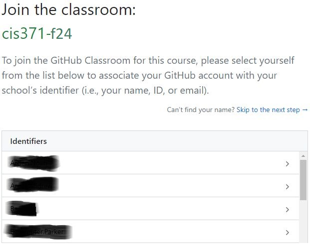
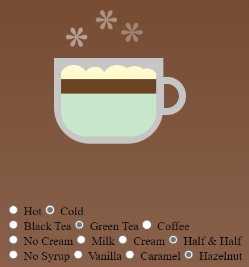

Custom Drink Maker#
In this homework, you will leverage Vue.js to create a dynamic and interactive beverage component. The goal is to implement a versatile component that allows users to customize their beverage by selecting various options for creamers, syrups, and base beverages.
Objectives#
Conditional Rendering: Utilize Vue’s conditional rendering capabilities to dynamically display beverage components based on user selections.
Two-Way Data Binding: Implement two-way data binding to ensure seamless updates between the user interface and the application state.
Vue 3 Components with Properties: Create Vue 3 components that accept properties.
Slots: Use Vue’s slot system to create flexible and reusable component templates.
Preparation#
Accept your instructor’s GitHub classroom invitation to set up your project repository.
Select Your Name: 
Initialize Your Project Repository:
Clone the Repository: You’re now ready to clone the repository. In your
terminal, use the following command with your SSH repository link to download the repository to your local machine:git clone [YOUR_SSH_REPO_LINK]
Install Required Packages: Execute the following command to install the necessary packages for your project:
cd [YOUR_REPO] npm install
Run a local development server (default port 5173):
npm run dev
Then you can access your project at
localhost:5173in browser.
Instructions#
In this homework, you will develop a Beverage Vue Application. Your objective is to enhance the application with additional choices for creamer, syrup, and base beverages, while ensuring proper UI behavior based on the customer’s selections.
Expand the selection options in the
App.vueto include more varieties of creamer, syrup, and base beverages for customers to choose from:Creamer: No Creamer, Milk, Cream, Half & Half
Syrup: No Syrup, Vanilla, Caramel, Hazelnut
Base Beverage: Coffee, Green Tea, Black Tea

Update the
Base.vue,Creamer.vue, andSyrup.vuecomponents to dynamically adjust their appearance based on the customer’s selections.Dynamically changing styles refers to visually altering the appearance of the beverage in response to the selected ingredients (e.g., different colors or textures for each creamer, syrup, and base beverage).
In
Beverage.vue, implement conditional rendering to ensure the beverage’s visual presentation is logical based on customer selections:If “No Creamer” and “No Syrup” are selected, only display the base beverage in the mug.
If “No Syrup” is selected and some creamer is chosen, display the creamer directly on top of the base beverage without any gap.
{kind=link}
{kind=link}
Grading Rubrics#
Grading Item |
Points |
|---|---|
Task 1 |
25 |
Task 2 |
25 |
Task 3 |
40 |
GitHub Clone, Commit, Push, & Deploy to GitHub Pages |
10 |
Deliverables#
Deploy your web application using the following commands in your
terminal:npm run build npm run deploy
Github Page Setup
Set up your GitHub repository for GitHub Pages deployment. Follow the steps shown in the image below:
 .
.Your web application will be accessible at the URL: gvsu-cis371.github.io/YOUR-REPO
Submit the URL of your GitHub Page in Blackboard.